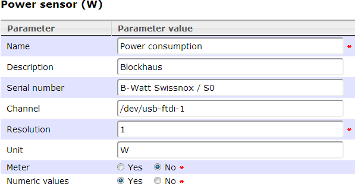

Scripts located in bin/S0/
To read S0 impulses from e.g. energy meters, a program and a script to store this into PVLng is included.
Please refer 1st to the hardware requirements sections.
Please put the device where your energy meter is connected to into the "channel" attribute like this:

HowTo: Define a "named" device
Mode of operation
An energy meter with S0 interface sends depending of the actual power usage an amount of impulses per kilo watt hour.
A common frequency is 1000 or 2000 per kilo watt hour, or 800 as for our energy meter.
The S0 binary listen the device and detects the time between these impulses. It converts them to power usage in watt.
Installation
Go to bin/S0 and run
$ ./configure
Make and install the S0 binary into /usr/local/bin with
$ make && sudo make install
Configuration
Please refer to S0.conf.dist to configure your environment regarding interfaces and channels.
$ cp bin/S0/S0.conf.dist cp bin/S0/S0.conf
Test
To test your configuration, run
$ ./S0.sh -t
Run with cron
Edit your crontab with
$ crontab -e
and add the following
# run each 2 minutes
*/2 * * * * /path/to/bin/S0.sh
Created with the Personal Edition of HelpNDoc: Free EPub producer